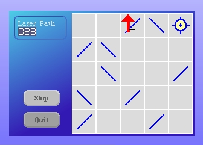

Add the following instance methods to our LaserGame class.
findLaserPathCounter
^self allMorphs detect: [:m | m knownName = 'laserPath'] ifNone: []
updateCounters
| led |
led := self findLaserPathCounter.
led notNil ifTrue: [
self laserActive
ifTrue: [led
highlighted: true;
value: self grid laserBeamPath size]
ifFalse: [led
highlighted: false;
value: 0]
]
Modify these methods to update our counter...
fireLaser
self laserActive
ifTrue: [self grid stopLaser]
ifFalse: [self grid fireLaser].
self drawGameBoard.
self changed.
self updateFireButtonLabel.
self updateCounters.
mouseUp: evt forMorph: aSketchMorph cell: aCell
| renderer pixelPositionWithinBoard cellForRedraw |
renderer := CellRenderer rendererFor: aCell grid: self grid form: self boardForm.
pixelPositionWithinBoard := self boardRelativePositionFor: evt.
cellForRedraw := renderer mouseUpWithinBoardOffset: pixelPositionWithinBoard.
self redrawCell: cellForRedraw.
self drawGameBoard.
self updateCounters.
self changed
By clicking the "Fire" button on and off you will see the counter change. Also, when you move a cell the path length changes.
Save your work as version 5.